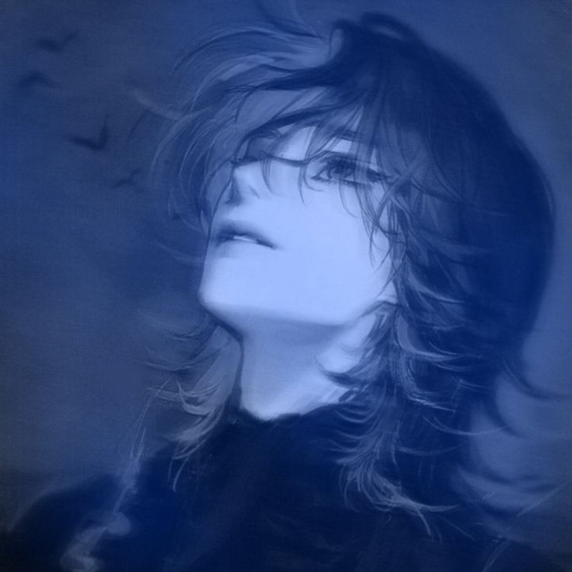

01 / ТО, ЧТО ОСТАЛОСЬ ВО МНЕ
Тебе.
От меня.
Иногда обычных слов действительно недостаточно. Поэтому здесь я собрал то, что мне хотелось сказать тебе без спешки, без недосказанности и без ожидания ответа.

A LETTER / 00
Не просто воспоминание.
Мне сложно выразить всё одной фразой. Внутри осталось столько несказанного: нежность, сожаление, благодарность и желание хотя бы однажды объяснить, почему наше общение было для меня таким важным. Эти слова не требуют ответа. Они просто помогают мне быть искренним.
02 / ОТКРОЙ ЛЮБОЙ ФРАГМЕНТ12 ИСТОРИЙ